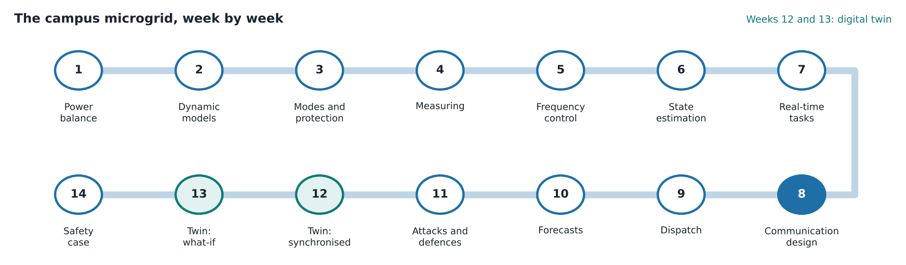
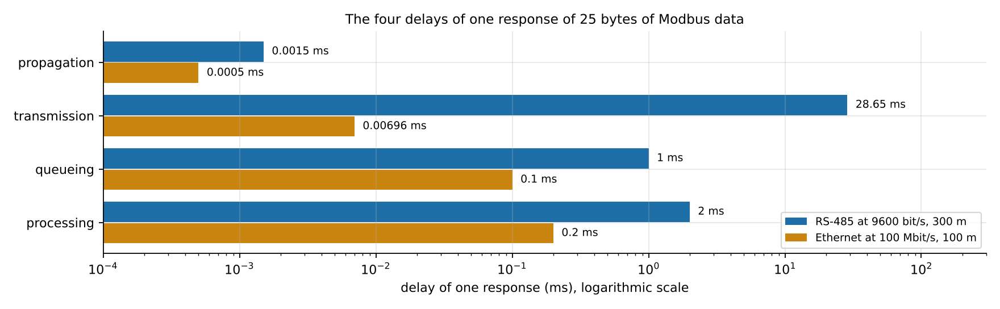
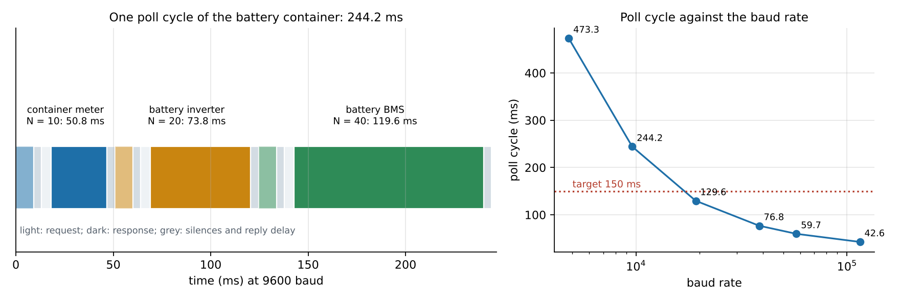
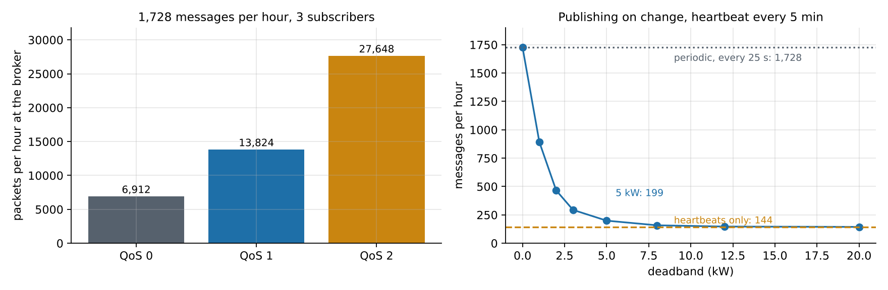
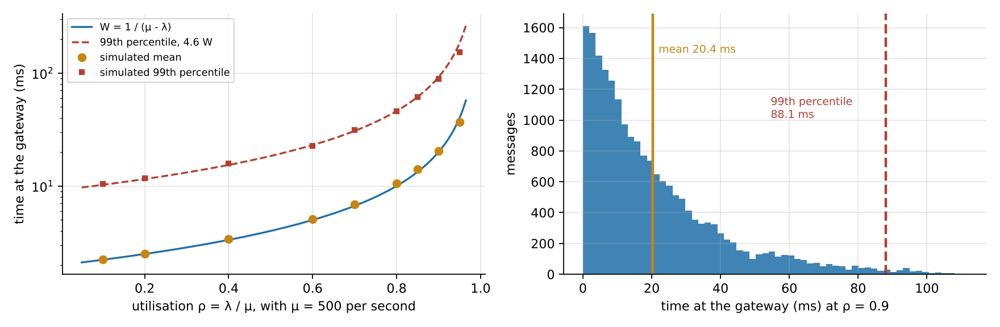
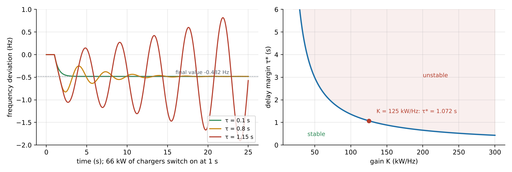
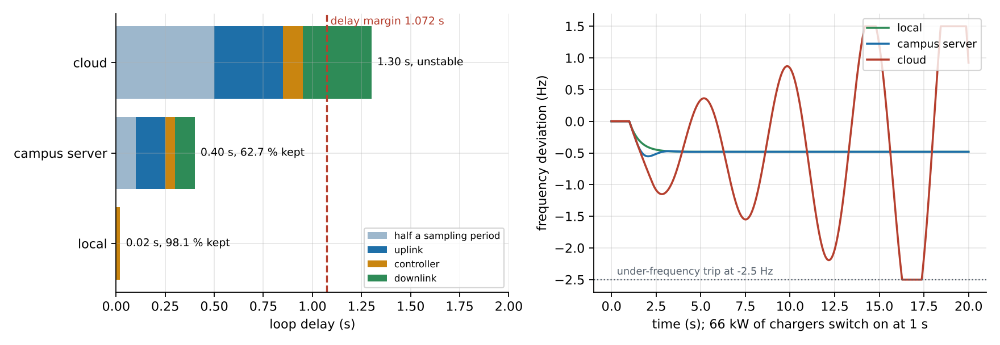

Overview
Weeks 1 to 7 modelled the campus microgrid, measured it, controlled its frequency and scheduled the tasks of its controller. In all of these weeks, a measurement simply arrived where it was needed. This week asks how it gets there. It starts with the layers of a network and the four delays of a link. Modbus, the oldest fieldbus still in wide use, shows how a master polls its devices over a serial line. The messaging protocol MQTT shows how a broker forwards published messages to subscribers. IEC 61850, a standard series of the International Electrotechnical Commission (IEC), shows how a protection relay sends a trip within a few milliseconds, with repetitions that make a loss unlikely. Queues explain why delays grow with the load, and the last section shows what delay does to a control loop. The campus microgrid reaches stage 8, a communication design with a delay budget. The Python step turns numbers into bytes, and the week closes with the question which decisions may move to the cloud.
Week at a glance
flowchart LR A["Layers and delays"] --> B["Modbus polling"] B --> C["MQTT publish and subscribe"] C --> D["IEC 61850 fast messages"] D --> E["Queues and repetition"] E --> F["Control over a network"] F --> S["The campus microgrid, stage 8"] S --> H["At the edge or in the cloud"]
Every method on this page is also written as Python code in the Colab notebook of the week. Its code is divided into numbered sections. Each orange box on this page names the section whose code carries out what the text above the box explains. The box says what to run and what to look at in that section, and its button opens the Colab notebook at that place. The virtual laboratories, the practice parts and the self-assessment of the week are in the interactive lab. Each blue box opens one part of the interactive lab. The part ends with a link back to its box on this page, and the Colab notebook is always opened from the orange boxes here.
Python step 8: Bytes, bits and binary messages
Python code in the Colab notebook, right after Section 0 (setup). Open the Colab notebook and run this step cell by cell: It consists of short pieces of Python code with their explanations, a quick check and three exercises. Topics: Bytes and hexadecimal · Bits and bitwise operators · Packing numbers into registers · A checksum loop.
The step continues with Python [1]. Devices on a network exchange bytes. The step writes bytes in hexadecimal notation, reads single bits with the bitwise operators and packs numbers into 16-bit registers with the module struct. It ends with a loop that computes a checksum over a message, the basis of the error check of Modbus in Section 1. Students who have never programmed start with the start-here notebook of the course.
Weeks 1 to 6 built the power balance, the dynamic models and the operating modes of the microgrid. They measured it with sampled and noisy sensors, controlled its frequency with the battery and estimated its state. Week 7 scheduled the periodic tasks of the microgrid controller.
This week connects the devices. Stage 8 designs the network of the microgrid: A fieldbus in the battery container, a broker for the meters, fast trip messages for the main breaker and a delay budget for the frequency loop.

Layers, frames and delays
A network moves messages between devices in layers [2]. The physical layer turns bits into voltages on a wire, light in a fibre or radio waves. The link layer frames the bits and checks them for errors, and the network and transport layers deliver a message across several links. The application layer gives the bytes a meaning, such as the active power of meter 3 in watts. Each layer adds its own header to the message, a process called encapsulation, so a value of four bytes can travel in a frame of almost a hundred bytes.
The time a message needs on one link has four parts [2]:
\(d_{proc}\) is the processing time in the device and \(d_{queue}\) the time the message waits behind other messages. The transmission delay \(d_{trans}\) puts \(L\) bits onto a link of rate \(R\) in bits per second. The propagation delay \(d_{prop}\) carries the signal along a cable of length \(\ell\) at the speed \(v\), about \(2 \times 10^8\) m/s in copper and in glass fibre.
A worked example. A meter answers with 25 bytes over a serial line at 9600 bits per second, and each byte takes 11 bits on the line, as the next section explains. Then \(L = 275\) bits and \(d_{trans} = 275 / 9600 = 0.02865\) s, that is 28.65 ms. Over 300 m of cable, \(d_{prop} = 300 / (2 \times 10^8) = 1.5\) µs, about 19,000 times less. The same data in a Modbus frame over Ethernet need 87 bytes. Besides 29 bytes of Modbus data, the frame carries two headers of 20 bytes each. They belong to the Transmission Control Protocol (TCP) and the Internet Protocol (IP), and Ethernet adds 18 bytes of header and checksum. At 100 Mbit/s they take \(696 / 10^8 = 6.96\) µs.
On a slow fieldbus, the transmission delay dominates. On a fast local network, transmission becomes cheap, and queues and processing decide the delay. TCP and IP are the transport and the network layer of the Internet.

Check your understanding. A frame of 1,000 bits crosses 200 m of cable at 1 Mbit/s. Which part of the delay is larger?
- A sensor 2 km away sends one value per second over a radio link of 9.6 kbit/s. Which delay would you reduce first, and how?
- Why can a faster link make a control loop slower if it carries many more messages?
Modbus: Polling the field devices
Modbus was introduced by Modicon in 1979 for its programmable logic controllers (PLC) and is maintained today by the Modbus Organization [3]. It follows a request and response pattern: A client, called the master on a serial line, sends a request, and one server, called a slave, answers. Each device keeps four tables: Coils and discrete inputs of single bits, and holding registers and input registers of 16 bits each. Function code 03 reads holding registers, 04 reads input registers, 06 writes one register and 16 writes several. One request reads at most 125 registers.
On a serial line, Modbus usually runs over RS-485 (Recommended Standard 485), a balanced pair of wires. The pair joins the devices one after another, with a termination resistor at each end of the trunk [4]. In the RTU (remote terminal unit) mode, each byte is sent as 11 bits: A start bit, eight data bits, a parity bit and a stop bit. A frame begins and ends with a silence of at least 3.5 character times, \(t_{3.5}\), fixed at 1.75 ms above 19200 baud. A request of function 03 has 8 bytes. The address of the device and the function code take one byte each, and the first register, the number of registers \(N\) and the check take two bytes each. The response has \(5 + 2N\) bytes.
The check is a cyclic redundancy check (CRC), a remainder of a polynomial division over all bytes of the frame [5]. The receiver repeats the division over the frame including its check, and a result of zero means that the frame arrived intact. The request that reads 10 registers from address 0 of device 1 is 01 03 00 00 00 0A C5 CD, and C5 CD is its CRC.
The master polls one device after another. The time of one transaction and of a whole poll cycle are:
\(r\) is the baud rate in bits per second, \(t_c\) the character time and \(N\) the number of registers read. \(t_{3.5} = 3.5\,t_c\) up to 19200 baud, and \(t_{resp}\) is the time the device needs before it answers. Two silences belong to each transaction, one after the request and one after the response.
→ This formula with numbers, step by step: Lab Part A, calculator, steps 1 to 6.
A worked example. The meter of the battery container is read with \(N = 10\) at 9600 baud and answers after \(t_{resp} = 5\) ms. The character time is \(t_c = 11 / 9600 = 1.146\) ms. The request takes \(8 \times 1.146 = 9.168\) ms and the response \(25 \times 1.146 = 28.65\) ms. The silence is \(t_{3.5} = 3.5 \times 1.146 = 4.011\) ms. Then \(T_{dev} \)\({}= 9.168 \)\({}+ 28.65 \)\({}+ 2 \times 4.011 \)\({}+ 5 \)\({}= 50.84\) ms. The Colab notebook, which does not round, gives 50.83 ms.
The container holds two more devices on the same bus, the battery inverter with 20 registers and the battery management system (BMS) with 40. At 9600 baud, the three transactions add up to a poll cycle of 244.2 ms, and at 19200 baud to 129.6 ms. The silences and the reply delays do not shrink with the baud rate, so the cycle improves less and less at higher rates. Modbus TCP carries the same requests over Ethernet. It drops the address and the CRC and adds a header of 7 bytes, and the checks of TCP and Ethernet take over.

Check your understanding. A master reads 40 registers from one device at 19200 baud with a reply delay of 5 ms. Which part of the transaction takes longest?
Interactive lab, Part A. The Modbus bench in 3D: A controller, a meter, an inverter and a battery management system on an RS-485 cable, with an oscilloscope that shows the real frames. Four rounds of prediction, polling and fault finding, and the calculator of the poll time. The results can be copied into the Colab notebook.
Python code in the Colab notebook, Section 1. Open Section 1 of the Colab notebook and run it. The function crc16_modbus computes the check of a frame and read_request builds the request of the worked example, 01 03 00 00 00 0A C5 CD. The functions poll_time and cycle_time carry out the formulas of this section and print the cycle for four baud rates. Paste the results of Part A into MY_BENCH, and the code compares your predictions with the model.
- A device on the bus is switched off. What happens to the poll cycle if the master waits 500 ms for each answer that does not come?
- Why would an engineer keep 9600 baud on a long bus although 115200 baud is possible?
MQTT: Publish and subscribe
Polling asks every device again and again, whether its value has changed or not. MQTT turns the direction around [6]. A device publishes a message with a topic, a path of levels such as campus/b2/meter/power, to a server called the broker. Clients subscribe to topic filters, and the broker forwards each message to every client whose filter matches. Publishers and subscribers never talk to each other directly and need not know of each other.
A filter may contain two wildcards. The plus sign + stands for exactly one level, so campus/+/meter/power matches the meters of all sites. The hash sign # stands for all remaining levels and may only stand at the end, so campus/b2/# matches everything of building 2. A retained message is kept by the broker and sent at once to every new subscriber. A will message is published by the broker when a client disconnects without saying goodbye [6].
MQTT runs over TCP and offers three levels of quality of service (QoS): At most once (QoS 0), at least once (QoS 1) and exactly once (QoS 2). QoS 0 sends one PUBLISH packet, QoS 1 adds an acknowledgement PUBACK, and QoS 2 exchanges four packets: PUBLISH, PUBREC, PUBREL and PUBCOMP [6]. Each hop, from the publisher to the broker and from the broker to each subscriber, has its own exchange. The packets that pass the broker for \(n\) messages and \(S\) subscribers are:
A worked example. Twelve meters of the campus publish their power every 25 s, which gives \(n = 12 \times 3600 / 25 = 1728\) messages per hour. With three subscribers at QoS 1, the broker handles \(P \)\({}= 1728 \times (2 + 3 \times 2) \)\({}= 13{,}824\) packets per hour, 3.84 per second. At QoS 2 the number doubles to 27,648.
Many of these messages repeat the last value. Publishing on change sends a message only when the value has moved by more than a deadband since the last message. A periodic heartbeat shows that the device is alive. With a deadband of 5 kW and a heartbeat every five minutes, the simulation in Section 2 of the Colab notebook cuts the 1,728 messages to 199 per hour.

Check your understanding. Which topics does the filter campus/+/meter/power match?
Interactive lab, Part B. Topics at the broker in 3D: A Raspberry Pi as the broker, a panel of meters that publish, and a dashboard, a battery controller and a data logger that subscribe. Six missions with topic filters and quality of service. The results can be copied into the Colab notebook.
Python code in the Colab notebook, Section 2. Open Section 2 of the Colab notebook and run it. The function matches carries out the rules of the two wildcards and prints which of the twelve topics each filter receives. Paste the results of Part B into MY_TOPICS, and the code checks your filters mission by mission. The function broker_packets carries out the formula of this section, and on_change simulates publishing on change.
- Which values of the microgrid would you poll, and which would you let the devices publish? Why?
- A subscriber connects at noon and needs the state of charge of the battery at once. Which feature of MQTT helps?
IEC 61850: Objects and fast messages in the substation
Substations, where the voltage of the grid is changed and where faults are cleared, are automated with the standard series IEC 61850 of the IEC. It describes the functions of an intelligent electronic device (IED), such as a protection relay, as logical nodes with standard names [7]. MMXU measures voltages, currents and power, PTOC is a time overcurrent protection, XCBR is a circuit breaker and CSWI controls a switch. A value has a path through device, node and data object. For example, PCC_Relay/MMXU1.TotW.mag.f is the total active power measured by the relay at the point of common coupling (PCC), where the microgrid meets the city grid.
Values for operators travel with request and response over TCP, mapped to the Manufacturing Message Specification (MMS). Trips cannot wait for a request. They are sent as GOOSE messages, short for Generic Object Oriented Substation Event: Multicast Ethernet frames that every subscribed device on the network receives [8]. IEC 61850-5 asks fast trip messages to arrive within 3 ms in transmission substations and within 10 ms in distribution, the performance classes P2/P3 and P1 [9].
GOOSE has no acknowledgement. Instead, a device repeats a message as soon as its state changes, at short intervals that grow, and then at a slow heartbeat. If each copy is lost with probability \(p\), independently of the others, and \(k\) copies can arrive before the deadline, the trip is missed only if all are lost:
A worked example. A relay sends its trip at 0 ms and repeats it at 2, 4, 8, 16 ms and so on. The transfer time is 1.5 ms and the deadline 10 ms. The copies sent at 0, 2, 4 and 8 ms arrive at 1.5, 3.5, 5.5 and 9.5 ms, so \(k = 4\). On a busy network that loses 2 percent of the frames, \(P_{miss} = 0.02^4 = 1.6 \times 10^{-7}\). The independence assumption fails for a cut cable, which loses every copy, so protection networks are often built twice.
Scene: A trip in the substation. The bay of the point of common coupling, where the campus meets the city grid. The protection relay, an IED, watches the current of the feeder, and an Ethernet switch joins it to the breaker and to the microgrid controller. The first button starts a fault on the feeder: The relay publishes a GOOSE trip and repeats it at 2, 4, 8 and 16 ms. The second button makes the network lose a share of the frames, and the third cuts the cable to the breaker. The timeline on the panel shows every copy and when the breaker opens.
Check your understanding. Copies of a trip are lost with probability 0.1 each, independently. How many copies must arrive in time for \(P_{miss} < 10^{-6}\)?
- Why does GOOSE repeat messages instead of waiting for an acknowledgement, as QoS 1 of MQTT does?
- Which failures make the losses of the copies dependent on each other?
Latency, queues and repetition
Delays grow with the load because messages wait. A gateway that forwards messages from the meters to the server can be modelled as a queue with one server. Messages arrive at random with rate \(\lambda\) and are served with rate \(\mu\), both per second. For random arrivals and random service times, the M/M/1 queue, the mean time a message spends at the gateway is [10]:
\(\rho\) is the utilisation of the gateway, \(W\) the mean time of waiting plus service and \(L\) the mean number of messages at the gateway. The relation \(L = \lambda W\) is Little's law and holds for any stable queue [11]. For the M/M/1 queue, the time at the gateway is exponentially distributed, so one message in a hundred stays longer than \(W \ln 100 = 4.6\,W\) [10]. This spread of the delay is called jitter.
A worked example. A gateway serves \(\mu = 500\) messages per second. At \(\lambda = 400\), \(\rho = 0.8\) and \(W = 1 / (500 - 400) = 0.01\) s, so 10 ms. Then \(L = 400 \times 0.01 = 4\) messages are at the gateway on average. One message in a hundred waits longer than \(4.6 \times 10 = 46\) ms. At \(\lambda = 450\), \(W\) doubles to 20 ms, and at \(\lambda = 480\) it reaches 50 ms. The last 20 percent of the capacity cost five times the delay.
Animation. A gateway as a queue. Messages arrive at random with the rate \(\lambda\) and are served one after another with the rate \(\mu\). The sliders set both rates, and the right panel shows the mean time at the gateway against the utilisation, with the running mean of the simulation as a moving point.

Check your understanding. A gateway is busy 90 percent of the time. What happens to the mean delay if the load rises to 95 percent?
Python code in the Colab notebook, Section 3. Open Section 3 of the Colab notebook and run it. The functions goose_times, in_time and p_miss repeat the worked example of the trip messages. The function mm1 carries out the formulas of this section, and simulate_queue serves 50,000 random messages one after another. The printout compares the simulated mean and the 99th percentile with the formulas.
- A gateway runs at 50 percent load on average, but every morning at 8:00 all meters publish at once. Which number would you size it for?
- Why do trip messages often get their own network or the highest priority on a shared one?
Control over a network
When the sensor, the controller and the actuator of a loop are joined by a network, the controller acts on old measurements and the actuator applies old commands [12]. The delays from the sensor to the controller and from the controller to the actuator add up to the delay \(\tau\) of the loop. Sampling adds a further delay: A measurement held for a sampling period \(T_s\) is on average \(T_s / 2\) old [13]. Packets can also be lost, and a lost command usually leaves the actuator at its last value [14].
Week 2 modelled the frequency deviation \(\Delta f\) of the microgrid in island mode with its inertia \(M\) and the damping \(D\) of the loads [15]. When the battery reacts to the measured deviation with the gain \(K\) through a network, the model becomes a differential equation with a delay:
With \(a = D / M\) and \(b = K / M\), the loop is stable for every delay if \(b \le a\). For \(b > a\) it is stable only below the delay margin [16, 17]:
At \(\tau = \tau^*\), the loop oscillates with the angular frequency \(\omega = \sqrt{b^2 - a^2}\), and for larger delays the oscillation grows. A larger gain shortens the delay margin: A strong controller that acts on old information overshoots. After a load step, the deviation settles at \(\Delta f = -\Delta P_{load} / (D + K)\) if the loop is stable.
→ This formula with numbers, step by step: Lab Part C, calculator, steps 1 to 5.
A worked example. The microgrid has \(M = 80\) kW·s/Hz, \(D = 12\) kW/Hz and \(K = 125\) kW/Hz. Then \(a = 12 / 80 = 0.15\) 1/s and \(b = 125 / 80 = 1.5625\) 1/s, so \(-a/b = -0.096\) and \(\arccos(-0.096) = 1.667\) rad. Further, \(\sqrt{1.5625^2 - 0.15^2} \)\({}= \sqrt{2.4189} \)\({}= 1.555\) rad/s, and \(\tau^* = 1.667 / 1.555 = 1.072\) s. After three cars start charging with 66 kW, a stable loop settles at \(\Delta f = -66 / 137 = -0.482\) Hz.

Check your understanding. The gain of the loop is doubled. What happens to the delay margin?
Interactive lab, Part C. Frequency control over the network in 3D: The battery container, the microgrid controller with a network emulator and the car park with its chargers. Find the largest delay at which the frequency still settles, and the calculator of the delay margin. The results can be copied into the Colab notebook.
Python code in the Colab notebook, Section 4. Open Section 4 of the Colab notebook and run it. The function simulate steps the model of this section with a buffer of past values as the network, and delay_margin carries out the formula. The printout classifies six delays as settled, growing or tripped. Paste the results of Part C into MY_LOOP, and the code compares your boundary with the delay margin.
- The network of a microgrid becomes slower during a storm. Would you lower the gain of the loop automatically? What would the microgrid lose?
- Why do inverters keep their fastest loops inside the device and leave only set points to the network?
Development templates of the week
The folder templates/ of the repository collects small working programs that carry out the methods of the course. Week 8 adds three of them, each with a description, its inputs and outputs and an example run.
| Template | What it does |
|---|---|
modbus_rtu_frames.py | Builds and parses Modbus RTU frames with their CRC, decodes registers into integers and floats and computes the poll cycle of a bus |
mqtt_topics_and_bridge.py | Matches MQTT topic filters, publishes on change with a deadband and a heartbeat, and bridges Modbus values to MQTT when the client library paho-mqtt is installed |
networked_loop_sim.py | Simulates a first-order loop with network delay, sampling and packet loss, and computes its delay margin |
The engineering side: Choosing a network
No single network suits every task of a cyber-physical system. The table compares the three protocols of the week by the pattern of communication, the transport and the task for which they are typically chosen.
| Protocol | Pattern | Transport | Typical task in the microgrid |
|---|---|---|---|
| Modbus RTU | Master polls slaves | RS-485 serial line | Reading the devices of the battery container |
| Modbus TCP | Client and server | TCP over Ethernet | Reading meters and inverters from the controller |
| MQTT | Publish and subscribe through a broker | TCP | Collecting meter values for dashboards and logs |
| IEC 61850 GOOSE | Multicast with repetition | Ethernet frames | Trip of the main breaker by the relay |
Neither Modbus nor plain MQTT authenticates its devices: Any device on the bus can send a write request. MQTT can run over encrypted connections with user names, and IEC 61850 has security extensions, but many installed systems run without them. Week 11 returns to the attacks that this allows.
A receptionist who phones every office once an hour to ask whether anything has happened is polling. A noticeboard where offices pin news, and where each person reads only the topics they follow, is publish and subscribe. A fire alarm that rings in every room at once, again and again until someone reacts, is closer to GOOSE.
- Would you let the dashboard of the microgrid and the trip of the main breaker share one Ethernet switch? Under which conditions?
- Which protocol of the week would you choose for a sensor on a battery that runs for years without a change?
The campus microgrid, stage 8: The communication design with a delay budget
Stage 8 designs the network of the microgrid in four parts and checks each part against its requirement with the formulas of this week. The battery container has its own Modbus bus, and twelve meters publish to a broker on the campus network. The relay at the point of common coupling trips the main breaker with GOOSE, and the frequency loop of Week 5 runs through the network.
| Part | Requirement | Result |
|---|---|---|
| Modbus bus of the battery container | Poll cycle below 150 ms | 244.2 ms at 9600 baud, 129.6 ms at 19200 baud: 19200 baud is chosen |
| MQTT traffic of the twelve meters | Fewer messages without losing changes | 1,728 messages per hour when periodic, 199 when published on change; 13,824 packets per hour at the broker for periodic QoS 1 |
| Trip of the main breaker | Missed trip below \(10^{-6}\) within 10 ms | 4 copies in time, \(P_{miss} = 1.6 \times 10^{-7}\) at a loss of 2 percent |
| Frequency loop | Loop delay below the delay margin of 1.072 s | Local 0.02 s, campus server 0.40 s, cloud 1.30 s |
The delay of the loop through the campus server adds four parts. These are half a sampling period of 0.2 s, an uplink of 0.15 s through the broker, 0.05 s in the controller and 0.10 s down to the inverter, together 0.40 s. It keeps \(1 - 0.40 / 1.072 = 62.7\) percent of the delay margin. The cloud adds a sampling period of 1 s and slower links, \(0.5 + 0.35 + 0.1 + 0.35 = 1.30\) s. This is beyond the margin, so the loop through the cloud would be unstable.
| Architecture of the frequency loop | Loop delay (s) | Delay margin kept |
|---|---|---|
| Local, inside the battery inverter | 0.020 | 98.1 % |
| Through the campus server | 0.400 | 62.7 % |
| Through the cloud | 1.300 | unstable (-21.3 %) |

Stage 8 leaves the fast frequency loop in the inverter and the campus server in charge of slower set points. Week 9 uses this network to dispatch the batteries and the loads of the campus.
Check your understanding. Why is the loop through the campus server stable although it waits 0.40 s for each measurement?
Interactive lab, Part D. Stage 8 by hand: The poll cycle at 19200 baud, the loop delay through the campus server and the share of the delay margin it keeps.
Python code in the Colab notebook, Section 5. Open Section 5 of the Colab notebook and run it. The code collects the results of stage 8 in the dictionary STAGE8. It holds the poll cycles, the meter traffic, the copies of the trip and the loop delays of the three architectures with the share of the delay margin they keep. A figure draws the delay budget and the three load steps.
Your application
The questions of this week arise in every cyber-physical system. The Colab notebook holds an application switch with five further systems: A factory line, a water network, a smart building, a railway crossing and the monitoring of an intensive care unit. Each has a fieldbus, a number of publishers and a first-order loop with its delay.
Python code in the Colab notebook, Section 6. Open Section 6 of the Colab notebook, set APP to one of the six names in the comment and run the cell. The code computes the poll cycle, the messages per hour and the delay margin with the share that the loop keeps.
At the edge or in the cloud?
Models of artificial intelligence (AI) increasingly forecast loads, detect faults and plan the operation of energy systems. Where they run matters as much as what they compute. Edge computing places computation close to the devices, which shortens delays, keeps data local and keeps working when the connection to the cloud fails [18]. The cloud offers more computing power and data from many sites, but adds delay and depends on the network.
The delay budget of stage 8 gives a rule. A model whose decisions enter a fast loop, such as the frequency loop with its margin of about one second, must run at the edge. A model that plans the next hour, such as a forecast of the load, can run in the cloud, because a delay of seconds is small against an hour.
Suppose that a vendor offers a cloud service that controls the battery of the campus every second from a forecast. The loop through the cloud waits about 1.3 s and would be unstable. The team instead lets the service send a schedule for the next hour, and the inverter keeps its own fast loop.
- Which decisions of the microgrid would you leave to a model in the cloud, and which must stay at the edge?
- What should the battery do when the connection to the cloud is lost for ten minutes?
Review cards
Select a card to turn it over.
+ matches one level of a topic, # all remaining levels [6].References
[1] Van Rossum, G., & Drake, F. L. (2009). Python 3 Reference Manual. CreateSpace.
[2] Kurose, J. F., & Ross, K. W. (2021). Computer Networking: A Top-Down Approach (8th ed.). Pearson. https://www.pearson.com/store/p/computer-networking/P100002980218/9780136681557
[3] Modbus Organization. (2012). MODBUS Application Protocol Specification V1.1b3. Modbus Organization. https://modbus.org/docs/Modbus_Application_Protocol_V1_1b3.pdf
[4] Modbus-IDA. (2006). MODBUS over Serial Line Specification and Implementation Guide V1.02. Modbus Organization.
[5] Peterson, W. W., & Brown, D. T. (1961). Cyclic codes for error detection. Proceedings of the IRE, 49(1), 228-235. https://doi.org/10.1109/JRPROC.1961.287814
[6] Banks, A., Briggs, E., Borgendale, K., & Gupta, R. (Eds.). (2019). MQTT Version 5.0 (OASIS Standard, 7 March 2019). OASIS. https://docs.oasis-open.org/mqtt/mqtt/v5.0/mqtt-v5.0.html
[7] International Electrotechnical Commission. (2010). Communication networks and systems for power utility automation - Part 7-4: Basic communication structure - Compatible logical node classes and data object classes (IEC 61850-7-4:2010, Edition 2.0). IEC.
[8] International Electrotechnical Commission. (2011). Communication networks and systems for power utility automation - Part 8-1: Specific communication service mapping (SCSM) - Mappings to MMS (ISO 9506-1 and ISO 9506-2) and to ISO/IEC 8802-3 (IEC 61850-8-1:2011, Edition 2.0). IEC.
[9] International Electrotechnical Commission. (2013). Communication networks and systems for power utility automation - Part 5: Communication requirements for functions and device models (IEC 61850-5:2013, Edition 2.0). IEC.
[10] Kleinrock, L. (1975). Queueing Systems, Volume 1: Theory. Wiley.
[11] Little, J. D. C. (1961). A proof for the queuing formula: L = λW. Operations Research, 9(3), 383-387. https://doi.org/10.1287/opre.9.3.383
[12] Hespanha, J. P., Naghshtabrizi, P., & Xu, Y. (2007). A survey of recent results in networked control systems. Proceedings of the IEEE, 95(1), 138-162. https://doi.org/10.1109/JPROC.2006.887288
[13] Åström, K. J., & Wittenmark, B. (1997). Computer-Controlled Systems: Theory and Design (3rd ed.). Prentice Hall.
[14] Zhang, W., Branicky, M. S., & Phillips, S. M. (2001). Stability of networked control systems. IEEE Control Systems Magazine, 21(1), 84-99. https://doi.org/10.1109/37.898794
[15] Kundur, P. (1994). Power System Stability and Control. McGraw-Hill.
[16] Hayes, N. D. (1950). Roots of the transcendental equation associated with a certain difference-differential equation. Journal of the London Mathematical Society, s1-25(3), 226-232. https://doi.org/10.1112/jlms/s1-25.3.226
[17] Gu, K., Kharitonov, V. L., & Chen, J. (2003). Stability of Time-Delay Systems. Birkhäuser. https://doi.org/10.1007/978-1-4612-0039-0
[18] Shi, W., Cao, J., Zhang, Q., Li, Y., & Xu, L. (2016). Edge computing: Vision and challenges. IEEE Internet of Things Journal, 3(5), 637-646. https://doi.org/10.1109/JIOT.2016.2579198